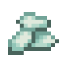
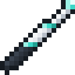

The Residual Stream
A transformer is built around a running sum. The embedding starts it; every layer reads it, computes something, and adds its result back; the last layer turns the sum into scores. That running sum is the residual stream. A Residual Stream is a conduit for it.
 Crafting
Crafting




How it flows
- Each block passes the stream on out of its front. The chevrons on its sides point the way.
- An output touching a stream block, face to face or through a cable, adds into the stream at that block.
- An input touching a stream block reads the stream as it arrives there, before that block's additions.
- An input at the front of the last block reads the whole sum.
A stream starts out empty: the first thing added to it, usually the embedding, is what it carries from there on. A stream placed against the front of another one carries on from it, and one placed against an output starts there. Sneak-use a face to turn a block.
A layer on the stream

This is one transformer layer, laid out the way it is usually drawn: read, normalize, compute, add back. Stack more layers by making the stream longer. The Transformer Block does all of this inside one block, residual additions included, so it goes on a line of its own, not on a stream: there it would add the stream to itself twice.
Why a stream
Each layer refines the sum rather than replacing it, so a layer that has nothing useful to add yet can leave it alone. Training sees the same shortcut: the gradient flows back along the stream to every layer directly. In a plain stack of layers it has to pass through every layer on the way down, and in a deep one it fades before it reaches the bottom. You can watch it happen: the amber wave that runs back while a model trains reaches every layer on a stream as bright as it started, and dims layer by layer down a deep plain stack.
Rules
- Two streams can't flow into one block, and a stream can't run in a circle.
- A machine reads the stream where its input touches it and adds where its output does. Reading after the place it adds back would make a loop.
- A cable touching a stream and nothing else that drives it carries the stream. A cable touching two streams and no output carries neither: hold a Tensor Probe to see what a cable carries.
Tensor CasingGlassRedstone DustPrismarine CrystalsResidual StreamThe embedding adds each token's vector into the first block, and the position table adds its own.
Attention reads the stream through a norm, and its cable adds the result back one block on.
The feed-forward block does the same on the other side.
At the end, a last norm reads the whole sum, and the unembedding turns it into scores for the Model Core.
